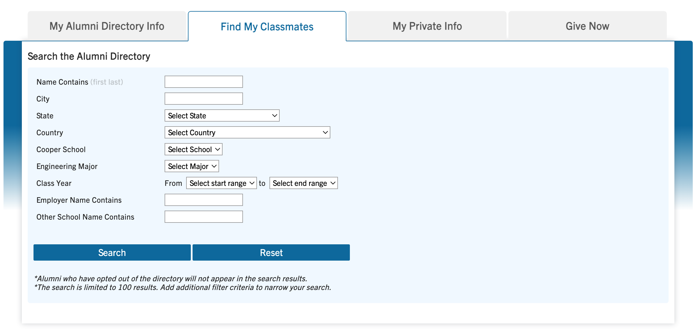
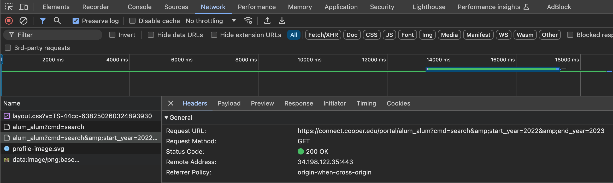
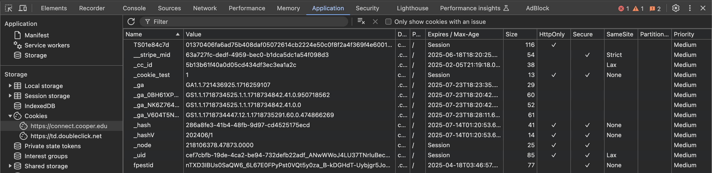

Hacking Cooper Union
March 2024
Introduction
Cooper Union produces some of the most intelligent, capable, and well equipped engineers, artists, and architects on the planet. In an ideal world, having a list of all alumni that have graduated would be really helpful for networking. Cooper Union fortunately does have an alumni portal, but unfortunately it’s strictly for alumni only.
So, I went one day to Cooper’s Center for Career Development and asked the staff for an excel file of the entire alumni roster. Unsurprisingly, they said no.
To get an alumni account, I contacted support and pretended to be an alumnus who forgot their password. They sent me a reset login code, and I used it to create an account. I thought this was all I needed and that I could now access the entire list of alumni. Boy was I wrong.
Problem
The alumni portal includes a "Find My Classmates" feature that serves as an interface between the user and the backend. This interface uses an editable URL API request to communicate and retrieve information. However, it has significant limitations: requests are restricted to certain parameters, and each request only returns a maximum of 100 alumni results. I needed to create an automatic process that would scrape the entire database by repeatedly calling the API.
Game. Set. Match.
Challenge 1: Reverse Engineering API Calls
The first challenge was figuring how to manipulate API calls to and from the website + reverse engineering the form's specifc parameters. Always remember that the inspect tool is your best friend when reverse engineering websites.
I started to do some digging and I got some good information from:
Inspect → Network → Refresh Page → Select API Request → Headers
https://connect.cooper.edu/portal/alum_alum?cmd=search&start_year=2022&end_year=2023This URL is the request method that the website uses.
Altering the URL a tiny bit and we get:https://connect.cooper.edu/account/login?r=https%3a%2f%2fconnect.cooper.edu%2fportal%2falum_alum%3fcmd%3dsearch
%26amp%3bsearch_cooper_school%3dEngineering%26amp%3bstart_year%3d2010%26amp%3bend_year%3d2010&cookie=1
Dividing that into 3 sections:
Start at login page
https://connect.cooper.edu/account/login?r=
Redirect to API with Engineering and class of 2010 as parameters
https%3a%2f%2fconnect.cooper.edu%2fportal%2falum_alum%3fcmd%3dsearch
%26amp%3bsearch_cooper_school%3dEngineering%26amp%3bstart_year%3d2010%26amp%3bend_year%3d2010
Expect cookies
&cookie=1
With this URL, we can now send automated requests to the website and it "should" send back the information we requested.
Challenge 2: Anti-Bot Counter Measures
The second challenge was that the alumni directory portal has several anti-bot counter measures. So non-human automation was going to be tricky. Building off of the request URL we crafted in the last section, I set up a simple script to probe the website.
import requests
from bs4 import BeautifulSoup
def login(username, password):
login_url = "https://connect.cooper.edu/account/login?r=https%3a%2f%2fconnect.cooper.edu%2fportal%2falum_alum"
payload = {
'username': username,
'password': password
}
session = requests.Session()
response = session.post(login_url, data=payload)
#response.raise_for_status()
return session, response
def extract_visible_text(response):
soup = BeautifulSoup(response.content, 'html.parser')
visible_text = soup.get_text()
return visible_text
def main():
username = 'email@email.com' #change to your username
password = 'myPassword' #change to your password
session, response = login(username, password)
print("Login response status code:", response.status_code)
print("Login response visible text:")
print(response)
print(extract_visible_text(response))
if __name__ == "__main__":
main()
I kept getting 403 Forbidden Error responses which looked like:
Login response status code: 403 Login response visible text:ForbiddenThis website uses scripting to enhance your browsing experience. Enable JavaScript in your browser and then reload this website.This website uses resources that are being blocked by your network. Contact your network administrator for more information.
This error means that the website received the request, understood it, but declined to authorize it. This also means that any further requests will be denied. Writting this in hindsight, it's easier for me to say that I knew was getting 403 errors because of sending no verification cookies. But the reality is that it took a couple days of learning what internet requests / protocols look like.
Eventually I figured out that I needed to send (emulate) verification cookies between me and the server (much like a google chrome browser would).
The work around to this problem is by collecting the cookies before login, collecting cookies after login, then comparing them.
ID Cookies
Coming back to the inspect tool:
Inspect → Application → Refresh Page → Storage → Cookies

Here we have all of the tracking cookies. _cc_id and _uid are important. But we will carry all of them just incase.
User Agent Tracking
Again, mimicing what a web browser like google chrome would do is key for getting around anti-bot counter measures. I want to mention the role of User Agents and the role they play for anti-bot web scraping.
User agents are strings that web scrapers use to identify themselves as browsers when making requests to websites. It tells the backend sever, "Hey, I'm a user on a Windows 10 using the latest version of Google Chrome (plus a couple more things)." This helps bypass basic anti-scraping measures and ensures the scraper receives the same content as a regular user. I just used the most common one on the internet, which happens to be:
'User-Agent': 'Mozilla/5.0 (Windows NT 10.0; Win64; x64)
AppleWebKit/537.36 (KHTML, like Gecko)
Chrome/91.0.4472.124 Safari/537.36'
Here's a nice website that has a rolling average of most common user agents (the highlighted one is your current user agent profile). BTW, this is only scratching the surface of what information websites receive and track.
Challenge 3: Web Scraping & Combining Data
The final challenge was taking all of the html data and converting it to a csv excel ready file.
I used pandas and df to take the response html from the website and convert the information to csv formatting with each alumnus’ information stored seperately.
I also iterated through the API URL to pull all alumni since 1941.
# Loop through the years 1941 to 2024
for year in range(1941, 2028):
# Second URL to display content after successful login
second_url = f'https://connect.cooper.edu/portal/alum_alum?cmd=search&search_cooper_school=Engineering&start_year={year}&end_year={year}&cookie=1'
# Send a GET request to the second URL after successful login
second_response = session.get(second_url)
# Check if the request was successful
if second_response.status_code == 200:
print(f"\nRequest to second URL for year {year} Successful!")
# Append HTML content of the response from the second URL to the variable
all_html_responses += second_response.text
else:
print(f"Request to second URL for year {year} Failed with status code: {second_response.status_code}")
Results
I ended up with a 14.1 MB file that includes all Cooper Union alumni from (1941-2028).
:)
Cooper Union - 0 Alek - 1